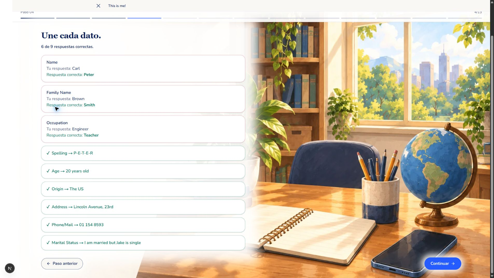
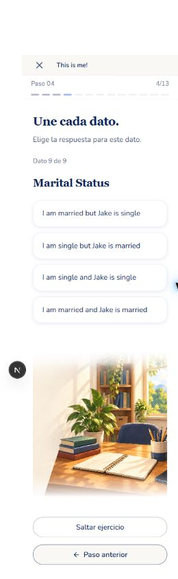
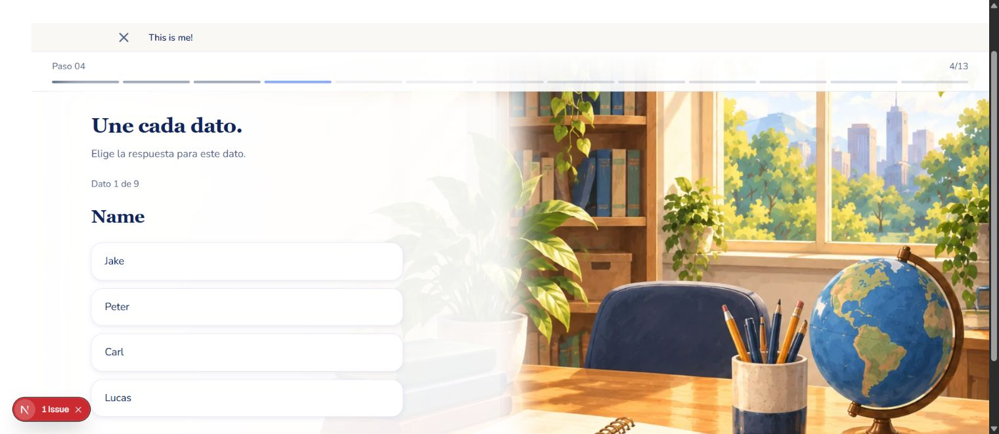
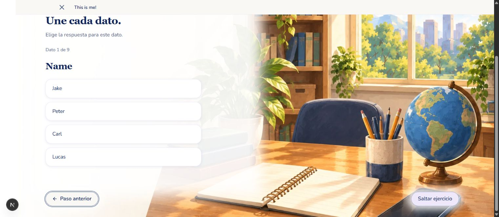

Mockup aprobado. Afinamientos aprobados: dato menor que el título y distractores del mismo tipo.Implementación real local con los bloques de la unidad.
Corrección y resumen

Móvil · 390×844

Escenario amplio conservado, opciones verticales y salto blanco opaco. El shell autenticado se comprueba después de publicar.
Escritorio bajo · 1536×667

Las cuatro opciones permanecen completas.

Pie en flujo normal, accesible por teclado y sin superposición.